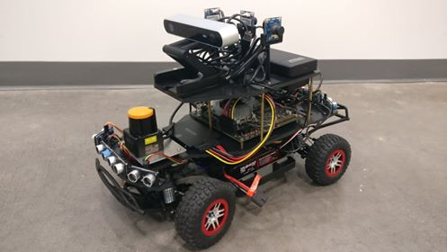

Super COMO
Super COMO is a high-end 1/10-scale autonomous RC car initiative at the University of Texas at Dallas. This assembly guide is based on the initial car build which was prepared in partial fulfillment of the EE/CE/TE Senior Design project for Fall 2018-Spring 2019.
Parts List
Below is a list of parts required for this build:
- Decks and 3D Printed Parts:
- 1x Hammerhead decks set
- Deck 1 / Bottom deck
- Deck 2 / Top deck
- Deck 3/ LIDAR deck
- 1x Teensy PCB / Protoboard
- 2x Encoder disks (black or white)
- 2x Encoder mounts
- 8x Ultrasonic mounts
- 1x Larger battery hold-downs
- 1x Hammerhead decks set
- Sensors:
- 1x Hokuyo UST-10LX laser range finder
- 1x Stereolabs ZED camera
- 3x ELP 1080p camera
- 2x Sparkfun Digital breakout light encoder
- 8x HC-SR04 ultrasonic sensor
- 1x Razor 9DoF IMU
- Computers and Microcomputers
- Teensy 3.5 (3.6 will not work)
- Jetson TX2 with the TX2 development board
- VESC 11.0 electronic speed controller
- Power Sources
- Traxxas
- XTPower
- Bolts, Nuts, and Spacers
- Bolts
- 16x M0x0.25” bolts
- 16x M2x10mm bolts
- 6x M2.5x8mm bolts
- 6x M2.5x10mm bolts
- 2x M3x6mm
- 2x M3x6mm plastic
- 4x M3x 8mm
- 4x M3x10mm
- 2x M3x10mm plastic
- 14x M3x12mm (or 13??)
- 4x M3x20mm
- Nuts
- 16x M0 nuts
- 16x M2 nuts
- 3x M2.5 nuts
- 6x M2.5 nuts
- 12x M3 nuts
- Spacers
- 2x M3 10mm plastic spacers
- 4x M3 10mm spacers
- Standoffs
- 10x M3 10mm metal Standoffs
- 4x Vibration dampers
- Bolts
- Header Pins and Cables
- 8x 4-pin male headers
- 2x 3-pin male headers
- 8x 4-wire female-to-female connectors
- 2x 3-wire male-to-female servo connectors
- 1x SATA with power extension cable
- Misc
- Liquid white-out or black permanent marker
Assembly Steps
Follow steps below to assemble the car. While matching the holes on the decks to the proper component is relatively easy considering that most parts only fit in one logical configuration, the mapping between deck holes to the proper components are indicated in the figures below. Keep them in mind while assembling the car.

- Red rectangles (holes at corners): Ultrasonic sensor mounting hole
- Green rectangle (holes at corners): SSD mounting holes
- Purple rectangle (holes at corners and along the edge): Jetson mounting holes
- Yellow rectangle (holes at corners): IMU mounting holes
- Red circles: Deck 3 mounting holes
- Yellow circles: Deck 2 mounting holes
- Green circles: Deck 1 mounting holes (onto the chassis)
{kind=link}
- Dotted red rectangle: Position of battery pack on top side (mounted with tape/Velcro)
- Dotted purple rectangle: Position of USB hub on bottom side (mounted with tape/Velcro)
- Green rectangle: ZED camera mounting holes (choose one)
- Yellow rectangle (holes at corners): ELP mounts
- Yellow circles: Deck 2 mounting holes (onto deck 1)
{kind=link}
- Red circles: Deck 3 mounting holes (onto deck 1)
- Green circles: Hokuyo lidar mounting holes
- Dotted green circles: RPLidar A2/A3 mounting holes (to, optionally, replace the Hokuyo Lidar)
Prepare the Lidar Connector
Add a barrel plug to power the Lidar
Prepare the Chassis
- Remove the plastic shell
- Remove the front and rear shell mounts
- Replace the hold-downs
- On the bottom side of the chassis there are four bolts that secure the battery hold-downs. Remove the bolts and replace each hold-down piece with the equivalent piece from the new set.
- Insert the Traxxas battery into its battery hold-downs and secure with the battery bar.
- Remove the ESC by unfastening the screws that hold it down.
- If your VESC does not come with the same plug-in connectors, cut off the connectors from the Traxxas ESC and solder them onto the VESC (order does not matter).
- Remove the receiver box
- Open the receiver box
- Unfasten the two screws that hold the receiver box down to remove it.
- Prepare the VESC
- If the VESC does not have a male Traxxas connector, solder the one from the Traxxas ESC to it.
- Connect the servo motor to the servo cable on the VESC. Add a piece of electric tape to ensure that the cables will not come loose (optional).
- If the VESC servo cable is also a female (smaller) plug (same as steering servo cable), either buy a cable that will handle the conversion or assemble your own male-to-male 3-pin converter. To do the latter, you may cut off two female ends from servo cable and solder them together or solder two 3-pin male headers together.
- Connect the three DC motor cables to the VESC.
- The order does not matter. When testing the car, if the car moves in the opposite direction you can swap any two connections to fix the driving direction.
- Install 2x 10mm metal standoffs on the rear mounting deck's inner holes.
- Install 2x 20mm metal standoffs on the front mounting deck's inner holes.
Once complete, the chassis should look similar to that in the figure below.

Adding Encoders (Optional)
To get estimates of instantaneous velocity, the car supports adding rear wheel encoders to measure the number of wheel rotations. To install the encoders follow these steps.
- Check that the encoder hole and the encoder mount hole align. Sometimes 3D printing results in residue inside the mount making it difficult to mount the encoders. Carefully remove any residue.
- For each encoder disc, color the recessed portions of the disc with a contrasting color to obtain an alternating pattern.
- Remove the rear wheels using the Traxxas supplied lug ranch.
- Install the encoder disks onto the inside of the wheels.
- Use a hot glue gun on the wheel strokes secure the disks in place.
The wheels with encoders should look like that in the figure below.
{kind=link}
- Install an encoder mount on rear hub carriers (blue).
- Place the mount as close to the base of the carrier as possible such that the mount's opening is on the top.
- Use a hot glue gun to secure the mount in place at a vertical position
- Take two servo cables, cut off the male (larger) end to obtain male-to-exposed wire servo connectors.
- Solder the exposed wires to the encoders per the following
- Black/ Brown servo wire to encoder VCC pin
- Red servo wire to encoder OUT pin
- White/ Orange servo wire to encoder GND pin
- Place each encoder into its mount and secure it using a ?(10?)mm M3 screw and its corresponding nut.
- Run the servo cable to the center of the car.
The mounted encoders should look like that in the figure below.
{kind=link}
- Place back the rear wheels and tighten the nut.
Replace the Chassis Springs
Replace the springs with stiffer springs (see video)
Prepare the Teensy/ Teensy PCB
- Solder 2x 24-pin male headers onto the Teensy 3.5.
If you manufactured the Teensy PCB follow these steps:
- Solder 2x 24-pin female headers onto the PCB.
- At BL_ENC and BR_ENC solder 2x 3-pin male headers.
- At US1, ..., US8 solder 8x 4-pin male headers.
If you are using a protoboard to make the Teensy circuit, follow the circuit diagram in the figure below to make the above ports and connections.
You may also choose to cut off one side of the 4-pin connectors and solder the wires directly to Teensy header pins as in this figure.

Prepare the Decks and Assemble the Car
Preparing the decks will involve working on both sides of the boards. As such we recommend having a box (with one side fully open) at hand to provide support and elevation for the decks will undergoing assembly
Follow these steps:
- Deck 1:
- Mount the ultrasonics onto the ultrasonic mounts and secure the mounts onto the top side of deck 1. You may also install the mounts on the deck first.
- Use 2x M2x?mm bolts and 2x M2 nuts to mount each ultrasonic sensor. Use diagonal holes.
- Use 2x M2.5x?mm bolts and 2x M2.5 nuts to secure each mount onto the decks. Use diagonal holes.
- Mount the Teensy PCB (or protoboard) onto the bottom of deck 1.
- Use 2x 6mm plastic screws to secure 2x 10mm spacers onto the bottom of the PCB (this will elevate the PCB).
- Use 2x 10mm plastic screws to secure the PCB onto the deck. The screws should go in from through the top side and secure the PCB on the bottom.
- Add the Teensy to the PCB.
- Connect a four pin connectors to each ultrasonic sensor, pass it the bottom of the deck and connect it onto the PCB. The wire connected to the VCC pin on the ultrasonic sensor should connect to the pin closest to the port name on the PCB (VCC pin on the board).
- Pass the rear wires through the slot near them. Use a zip tie to secure the wires to the bottom of the deck (using the rear-most parallel slits).
- Pass the two middle wires through the slot near them. Pass the side wires down at the sides of the deck. Use a zip tie to secure the wires to the bottom of the deck (using the front-most parallel slits).
- Add the IMU to the top side of deck 1.
- Considering the top side of the IMU to be the side with the USB port, pass the screw end of the vibration damper through the IMU's bottom side and secure them with M3 nuts on the top side.
- Use 4x 8mm metal screws, pass them from the bottom of the deck, and secure the IMU onto deck 1 such that the USB port point to the left side of the car.
- Add the SSD to the top side of deck 1.
- Use 4x 12mm screws, pass them from the bottom of the deck, and add a nut on the top side but keep it loose. Do not tighten the nut yet.
- Position the SSD on top of the nuts then tighten the screws to secure the SSD onto the deck.
- Note that the nut will provide the necessary elevation for the SSD to account for the zip-tie.
- Install the LIDAR deck (deck 3) mounts.
- Insert 4x 10mm metal bolts from the bottom of deck 1 and secure them with 4x 10mm standoffs.
- The standoffs should have the screw portion to the top.
- Install the Jetson mounts.
- Insert 4x 20mm bolts through the bottom of deck 1 and secure them with 10mm spacers.
- The protruding portion of the bolt will be used to secure the Jetson.
- Install the deck 2 mounts.
- Using 5x 12mm screws through the bottom of deck 1, secure 5x 100mm standoffs.
- Mount the ultrasonics onto the ultrasonic mounts and secure the mounts onto the top side of deck 1. You may also install the mounts on the deck first.
At this point, deck 1 should looks like these top, bottom, and side images.
{kind=link}
{kind=link}

- Install the Jetson TX2 board onto deck 1.
- Using the protruding Jetson TX2 mounting bolts, place the Jetson (WiFi to the right side of the car) onto deck 1 and secure it with 4x M3 nuts.
- Attached a SATA with power extension cable from the SSD to the Jetson's SATA port.
- Install the Jetson's WiFi antennas.
- Mount deck 1 onto the chassis.
- Using 4x 12mm metal bolts mount deck 1 onto the chassis through the standoffs installed onto the front and rear chassis mounting decks.
The car should look like that in the figure below

- Deck 3 (LIDAR deck):
- Add a bit (pea sized blob) of thermal paste onto the bottom of the Hokuyo Lidar (Optional).
- Secure the Lidar onto the deck using 2x 6mm or 8mm bolts.
- Mount deck 3 onto deck 1 through the deck 3 standoffs. Secure the deck using 4x M3 nuts.
- Connect ethernet cable to the Jetson.
- Pass the power cable to the rear end of the car. Use zip-ties and slits to secure the cable appropriately.
Once deck 3 is connected, the car should look like that in this figure.
{kind=link}
- Deck 2:
- Mount the ELP cameras.
- Unplug the USB cable for ease of installation.
- Mount the ELP camera base mounts onto the top side of deck 2. Use 2x ?mm M? screws and corresponding nuts to secure each base.
- Place the ELP cameras onto their mounting decks. Use 2x 6?mm M2.5 screws to secure the cameras. Place the cameras with upside-down and have the closed portion of the ELP mounting decks point down (so that it carries the ELP camera).
- Mount the ELP mounting decks onto the base mounts using a 10mm M2.5 bolt and the corresponding nut
- Mount the ZED camera.
- Use a 1/4" screw to fasten a camera head (any generic 1/4" camera mounting head/ tripod head works) onto the top of deck 2. Use any of the 1/4" holes (larger holes).
- Using two equally sized pieces of Velcro tape, secure the USB hub onto the bottom side of deck 2. Place it close to the rear end of the deck.
- Using two equally sized pieces of Velcro tape, secure the battery onto the top rear end of deck 2.
- Mount the ELP cameras.
The bottom side of deck 2 should look like that in Fig 9.
-
Mount deck 2 onto deck 1.
- Using 5x 12mm metal screws secure deck 2 onto its mounting standoffs on deck 1.
-
Use zip-ties and slits to manage the cables.
This concludes the car assembly. It should look like the car in the top and side view images.
{kind=link}
{kind=link}
Final image of car 